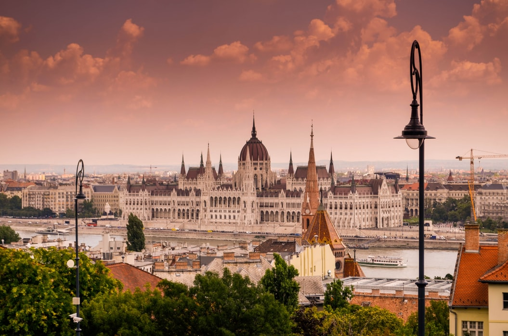
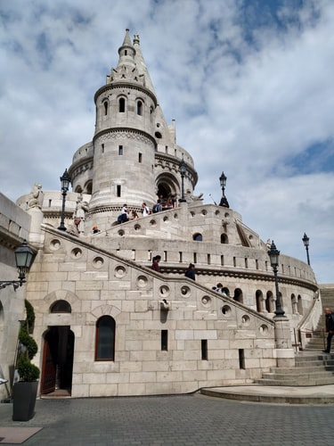
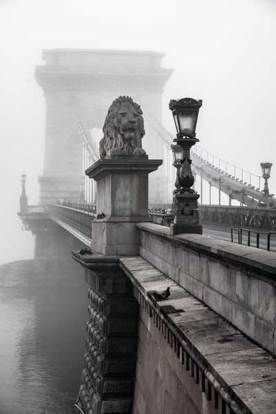

Будапешт
Будапе́шт — столица Венгрии, образованная в 1873 году в результате слияния трёх городов на берегах Дуная: Пешта, Буды и Обуды. Крупнейший город страны и десятый по величине в Европейском союзе (около 1,75 млн жителей на 2019 год[2]), центр агломерации с населением около 2,97 млн человек (2017).
Первое поселение на территории Будапешта под названием Ак-Инк было основано кельтами в I веке до н. э. При римлянах Аквинк стал центром провинции Нижняя Паннония. В Средние века король Венгрии Бела IV сделал город Буда своей столицей. В 1867 году Пешт стал столицей Транслейтании — одной из частей, составляющих Австро-Венгерскую монархию.
Здание Венгерского Парламента

Рыбацкий Бастион

Цепной мост Сечени
